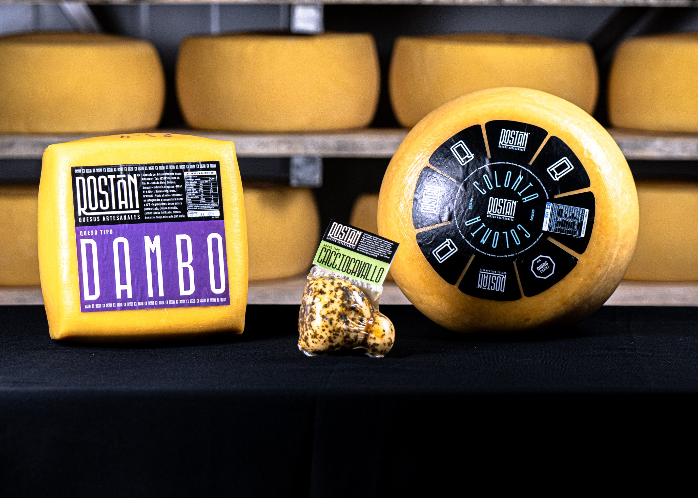
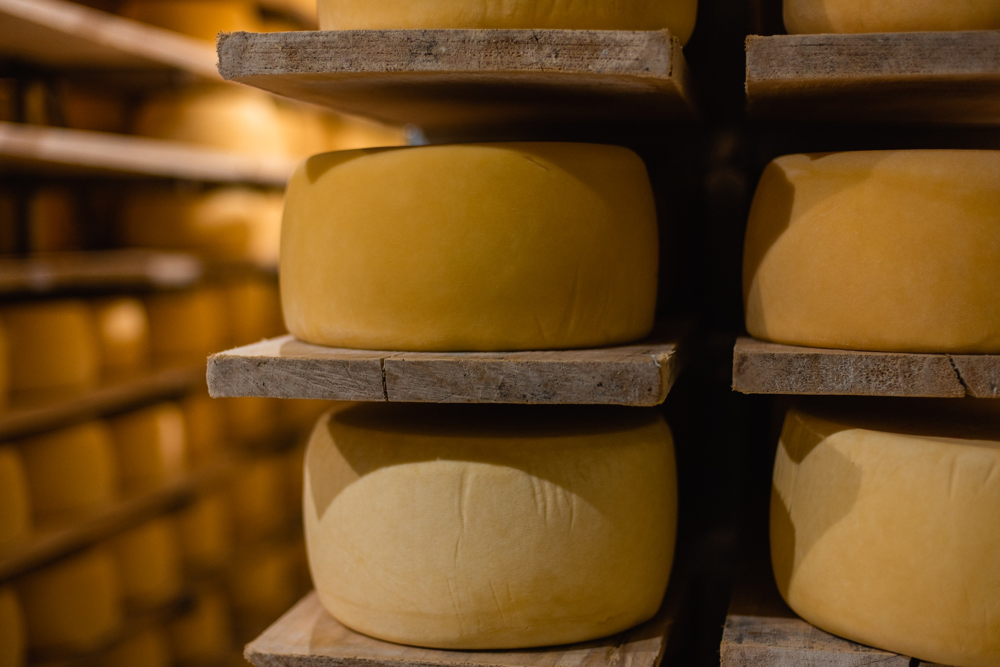
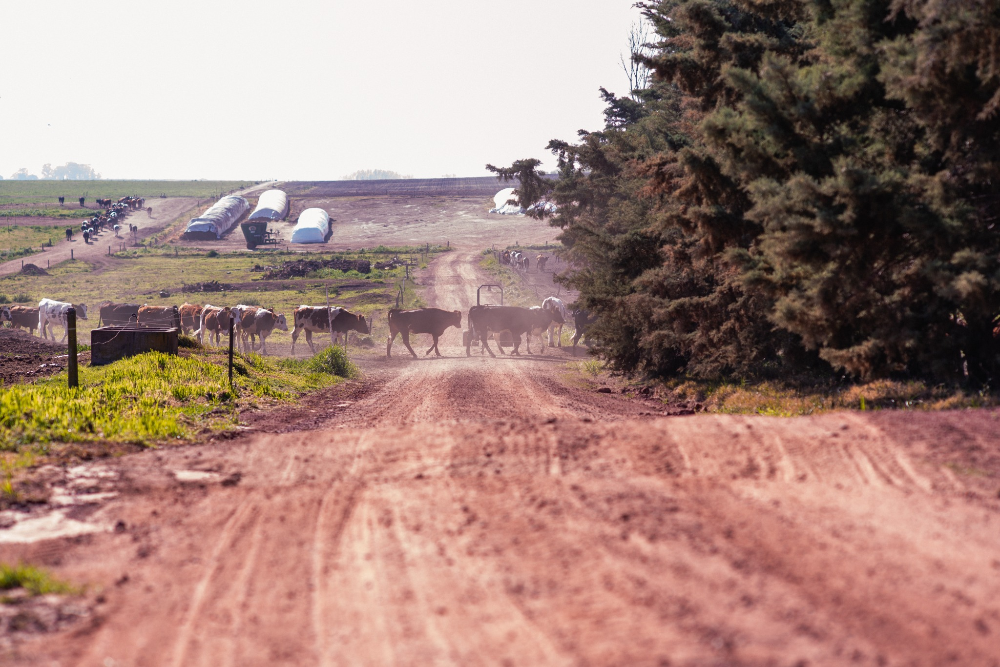
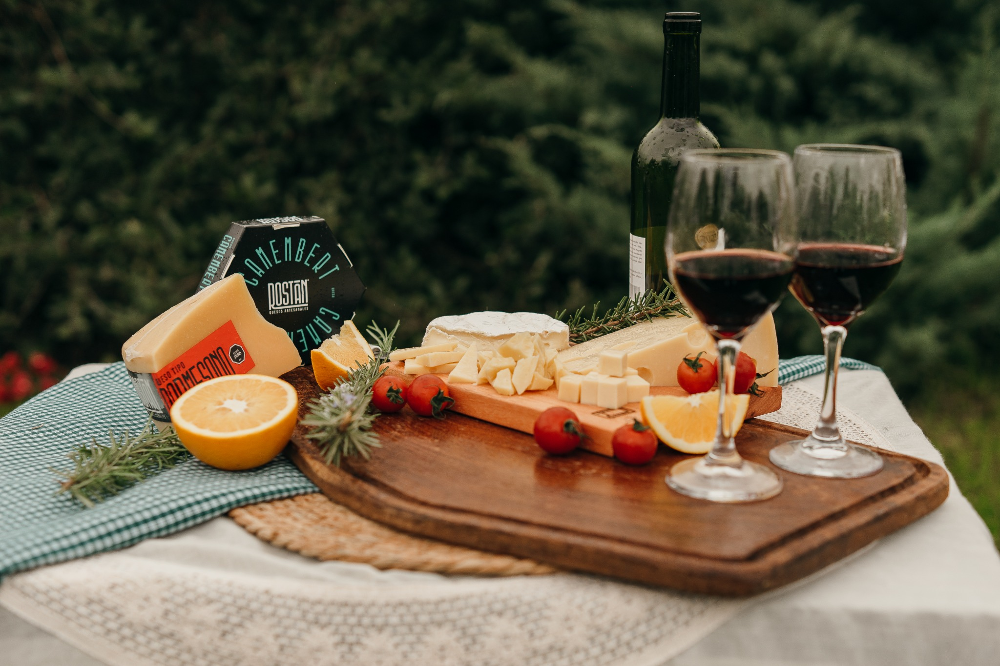

QUESOS ARTESANALES
CON HISTORIA
CAÑADA NIETO · SORIANO · URUGUAY
Una tradición familiar que continúa desde 1991.
Conocé nuestra historia →TRADICIÓN FAMILIAR
MÁS DE 30 AÑOS
HACIENDO QUESO.
En Cañada Nieto elaboramos quesos artesanales combinando tradición, experiencia y cuidado en cada etapa del proceso.
Nuestra historia →NUESTROS QUESOS
VARIEDAD, CALIDAD
Y CARÁCTER.


EL OFICIO DEL TIEMPO
DE LA ELABORACIÓN
A LA MADURACIÓN.
Cada variedad tiene su propio proceso, textura y tiempo. Detrás de cada queso hay trabajo diario, experiencia y atención al detalle.
Descubrí nuestros quesos →

DE NUESTRA TIERRA, A TU MESA
QUESOS PARA
COMPARTIR.
Distintas variedades, un mismo origen y una misma forma de hacer las cosas.
RECONOCIMIENTOS
UNA HISTORIA
PREMIADA.
Décadas de trabajo reconocidas en concursos nacionales e internacionales.
Ver reconocimientos →